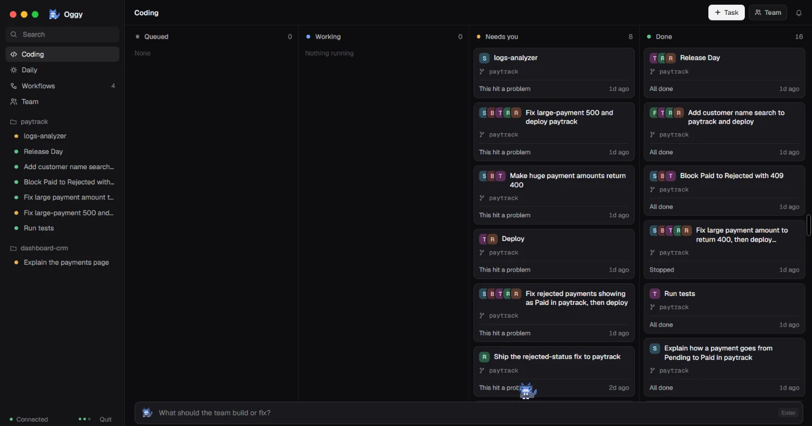
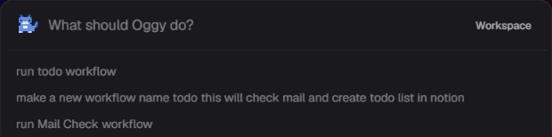
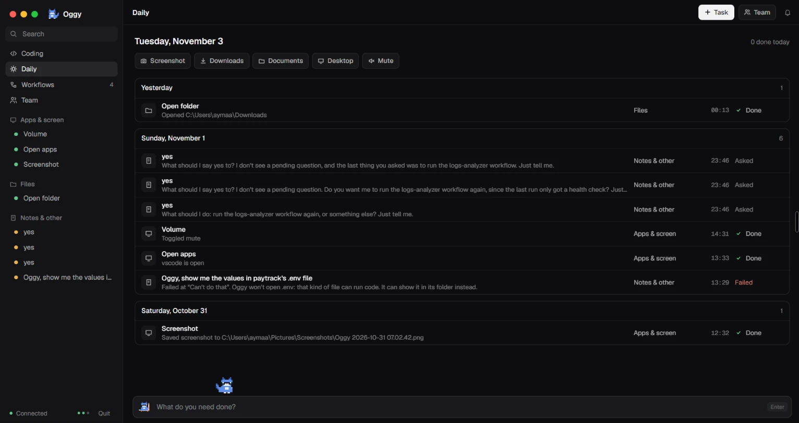
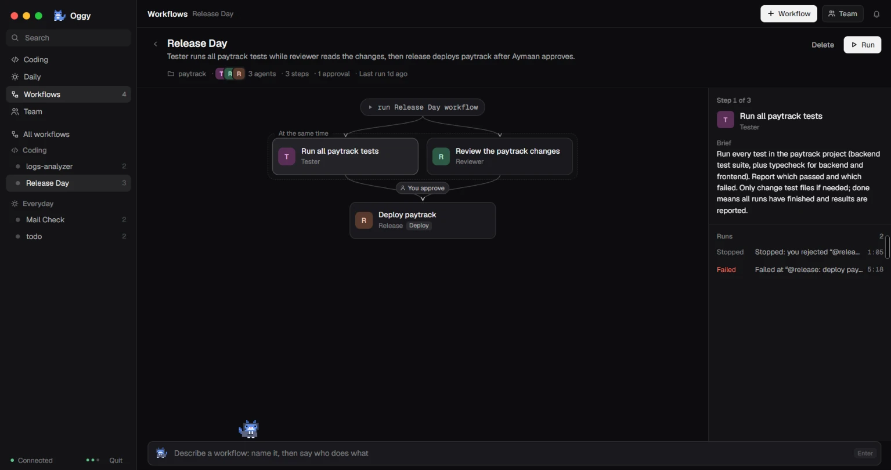

Coding team
Fix it, test it, ship it
Agents that find the bug, fix it, test it, review it and ship it, after you say yes.
Fix the 500 on huge payments in paytrack
Hold your Wispr Flow key and say it, or press Ctrl + Space and type. Oggy opens your apps, sorts your files, clears your inbox into a to-do list and runs a whole team of coding agents. Anything risky waits for your yes.
Free & open source · Windows 10 / 11 · 64-bit


how it works
The Oggy box opens over whatever you're doing.
Hold your Wispr Flow key and talk, or just type.
Anything risky waits for your yes.
Oggy reports back what it did.
what it does
Agents that find the bug, fix it, test it, review it and ship it, after you say yes.
Fix the 500 on huge payments in paytrack

Open apps and folders, move files, take screenshots, check your mail and write to-dos in Notion.
Take a screenshot and open my Downloads

Describe a routine once and Oggy saves it. After that, its name is all it takes.
Run todo workflow
Oggy is a Switch agent. You talk to Oggy, and Oggy runs your Claude Code team in shared Switch rooms, so every job is in one thread and nothing ships without a yes.
Install Oggy, add Wispr Flow for voice, and tell your PC what to do.
Oggy-Setup.exe · Windows 10 / 11 · 64-bit · Needs Switch Console